Abstract
This project develops a web platform to manage and explore the provenance of online newspaper articles, including text and multimedia content. It uses metadata models like DCMI, ITPC Standards, and the Social Semantic Web Thesaurus to structure articles and integrates external data from DBpedia. The platform, inspired by Europeana Stories and The London Gazette, allows users to query, visualize, and recommend relevant content based on rich semantic metadata.
Introduction
The use of semantic web technologies in online content management marks a substantial shift in how information is structured, accessible, and shared on the internet. Traditional online technologies rely mainly on static HTML and metadata, which can limit the richness and interconnectedness of web information. On the other hand, the semantic web uses technologies like SPARQL (SPARQL Protocol and RDF Query Language) and RDF (Resource Description Framework) to create a more intelligent and dynamic web. These technologies make it possible to create structured, machine-readable data that is simple to comprehend, query, and connect across various platforms.
Internal Data Structures and Models
The core data structure involves representing News Articles, Topics, and Media. This can be mapped to the following models:
NewsArticle Model
- ID: URI (
rdf:typein the RDF) to uniquely identify each news article. - Title: The title of the news article (
dc1:title). - Description: A short description or summary of the article
(
dc1:description). - Source: The news source(
dc1:source). - Date: The date the article was published (
dc1:date). - Author: The author of the article (
dc1:author). - Content: The content of the article (
dc1:content). - Identifier: A reference to an external identifier (
dc1:identifier). - Topics: A collection of topics related to the article (
ns1:topic).
Media Model
- ID: URI (
rdf:aboutin the RDF) to uniquely identify the media object. - Type: The type of media (
iptc:DigitalSourceType). - Identifiers: Multiple image URLs as resources (
dc1:identifier), each representing different versions or representations of the media.
Entity Model for Subject and Topics
Each subject is represented as a separate entity with a URI and a collection of identifiers for cross-referencing in the knowledge base for DBpedia.
Databases Used in the Project
In this project, two types of databases are utilized: SQLite and Fuseki. Each serves a different purpose in terms of data storage and querying capabilities.
SQLite Database
The SQLite database is used to store structured data, such as news articles, metadata, and associated properties.
- Usage: Stores metadata such as titles, dates, and authors.
- Technical Details:
- Database type: SQLite
- Tables: Articles, Multimedia, Topics
- Querying method: SQL
Fuseki Database
The Fuseki database serves as a SPARQL endpoint for querying RDF data stored in the project.
- Usage: Used to query RDF data via SPARQL queries.
- Technical Details:
- Database type: Fuseki (SPARQL endpoint)
- Data format: RDF, JSON, JSON-LD, RDFa
- Querying method: SPARQL
- Access: HTTP-based endpoint
Implemented API
The project includes an API that provides access to the internal data structures and models. The API allows users to perform various operations, such as querying articles, retrieving metadata, and accessing multimedia content. The API is designed to be RESTful, providing a simple and intuitive interface for interacting with the system.
The API was implemented using Flask, a lightweight web framework for Python. The API endpoints are designed to provide access to news articles, topics, and multimedia content in a structured and efficient manner. The API supports various HTTP methods such as GET and POST to enable different operations on the data. The API responses are formatted in JSON, XML, and Turtle to support different data formats and serialization methods. The API also includes support for SPARQL queries to enable advanced data retrieval and manipulation.
The API endpoints include:
- GET /news: Retrieves a list of news in a paginated format. In order to take only a part of the news, the user can specify the following parameters:
- skip - the number of news to skip
- take - how many news to take
- GET /news/{id}: Retrieves detailed information about a specific article identified by its ID.
- GET /topics/{topic}: Retrieves recommended news with the same topic as the one specified in the URL. This endpoint is useful for providing users with related articles based on a specific topic of interest.
- GET /news_rdf_xml/{id}: Retrieves the news details as a XML.
- GET /news_rdf_turtle/{id}: Retrieves the news details as a Turtle.
- POST /sparql: Based on the query provided by the user and the format of the response the API provides articles in different formats:
- JSON: Shown as table
- JSON-LD: Show as json-ld
- RDFa: Shown as RDFa
Architecture diagrams
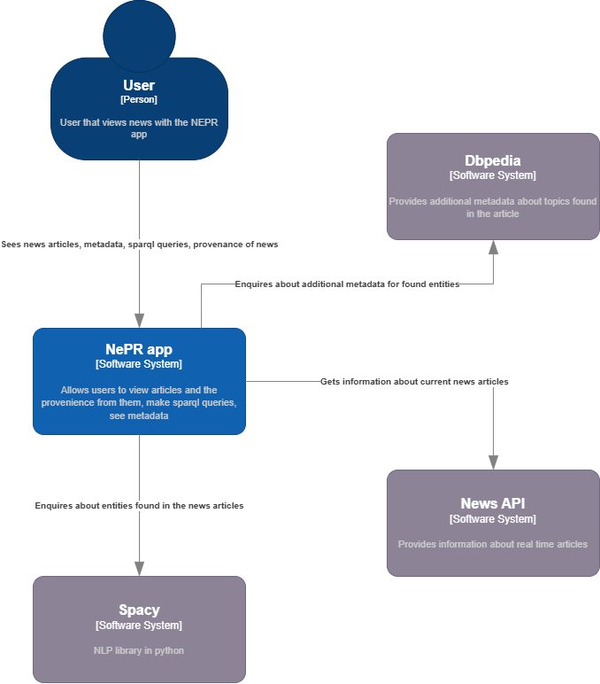 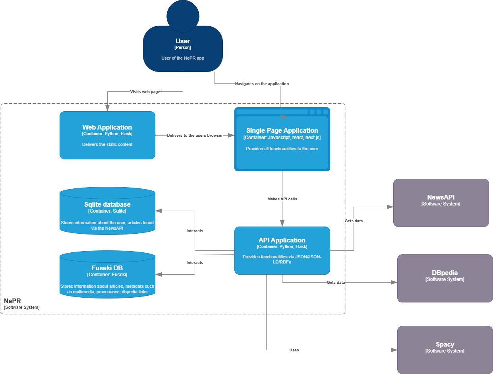 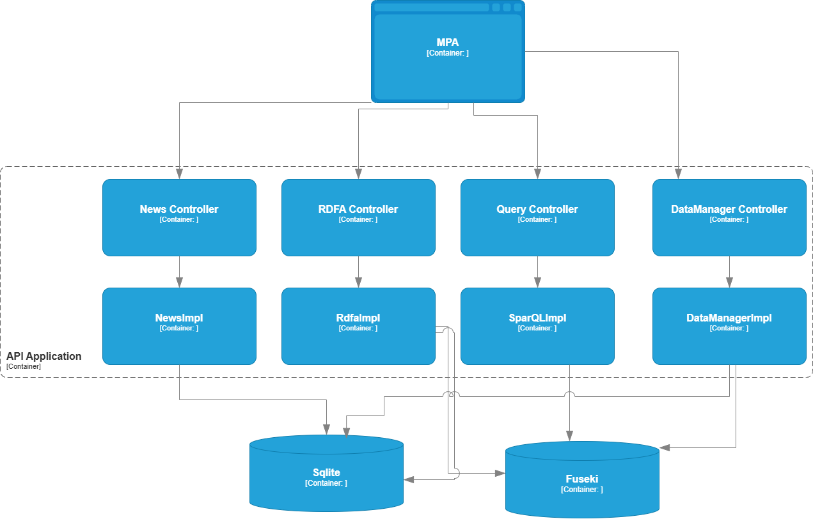RDF-Based Knowledge Model
Considerations on the Designed/Reused RDF Model
The system integrates a carefully designed RDF-based knowledge model to support structured metadata and semantic relationships between entities. The following considerations were made while designing or reusing the model:
- Expressiveness: The ontology ensures a rich and flexible representation of domain concepts, relationships, and attributes to cover essential metadata related to online newspaper articles.
- Vocabulary and Taxonomy: The system incorporates existing well-defined ontologies such as schema.org, DCMI Metadata Terms, and ITPC Standards to enhance compatibility and avoid redundant vocabulary creation.
- Real Usage in Context: The selected ontologies and vocabularies are applied directly to model provenance, classification, and semantic annotation of news articles, ensuring real-world applicability within the developed system.
Additionally, the ontology was generated and refined using Protégé, a widely used ontology development tool. The knowledge model was tested within Protégé to validate consistency, logical relationships, and expressiveness before integration into the system.
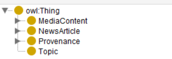Integration with External Knowledge Sources
SPARQL queries are employed to extract relevant data from DBpedia, enriching the internal knowledge base with external information. This integration enhances metadata completeness and contextual accuracy in news article classification.
Conformance to Linked Data Principles
The solution adheres to linked data best practices by ensuring:
- Uniform Resource Identifiers (URIs): Each entity in the RDF model has a globally unique and dereferenceable URI.
- Standardized RDF Representations: The system supports RDF serialization formats such as Turtle, JSON-LD, and RDF/XML.
- The use of SPARQL queries allows the data to be machine-readable and searchable
Non-trivial SPARQL queries of interest
1. Articles Sharing a Topic
The following query identifies pairs of articles that share a common topic. This can be useful for discovering articles related to similar subjects and understanding how different articles are connected.
PREFIX dc1: <http://purl.org/dc/terms/>
PREFIX ns1: <http://www.socialsemanticweb.org/ns/>
SELECT ?article1 ?article2 ?relation
WHERE {
?article1 ns1:topic | dc1:subject ?topic .
?article2 ns1:topic | dc1:subject ?topic .
FILTER (?article1 != ?article2)
BIND("Shared Topic" AS ?relation)
}
Explanation: This query finds pairs of articles (?article1 and ?article2) that share the same topic, using the `dc1:subject` and `ns1:topic` predicates. The `FILTER` clause ensures that an article is not compared with itself, and the `BIND` function creates a new variable (`?relation`) indicating the shared topic.
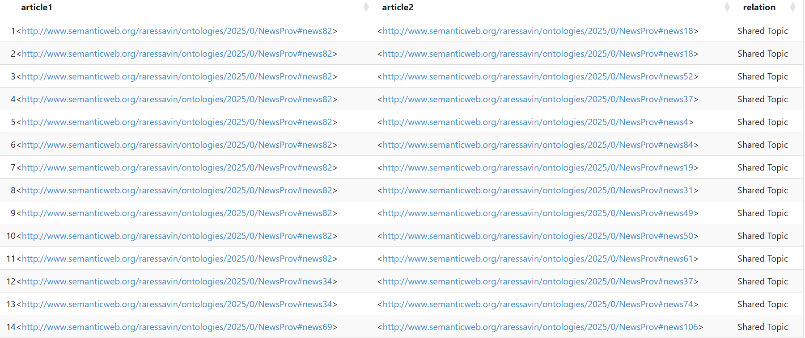2. Articles Linked to DBpedia
This query identifies articles that are linked to entities in DBpedia, an external resource that contains structured data about various topics. It helps establish connections between the content of the articles and the rich external knowledge provided by DBpedia.
PREFIX dc: <http://purl.org/dc/terms/>
PREFIX ns1: <http://www.socialsemanticweb.org/ns/>
SELECT ?article ?dbpediaEntity ?relation
WHERE {
?article dc:subject ?dbpediaEntity .
FILTER(STRSTARTS(STR(?dbpediaEntity), "http://dbpedia.org/resource/"))
BIND("Linked to DBpedia" AS ?relation)
}
Explanation: This query retrieves articles that are linked to DBpedia resources by examining the `dc:subject` predicate. The `FILTER` clause ensures that only URIs starting with `http://dbpedia.org/resource/` are included. The `BIND` function adds a relationship label "Linked to DBpedia" to these articles.
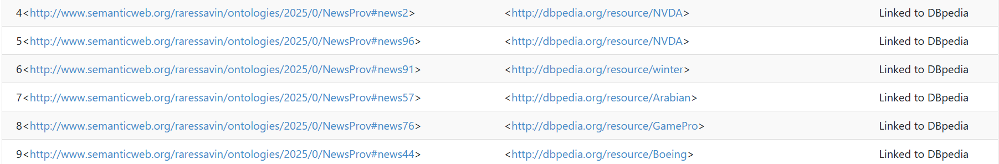3. Constructing RDF Data for Articles Linked to DBpedia
This query constructs new RDF triples that link articles to DBpedia entities. It can be used to populate a knowledge graph or store this relationship for further processing.
PREFIX dc: <http://purl.org/dc/terms/>
PREFIX ns1: <http://www.socialsemanticweb.org/ns/>
CONSTRUCT {
?article dc:subject ?dbpediaEntity .
}
WHERE {
?article dc:subject ?dbpediaEntity .
FILTER(STRSTARTS(STR(?dbpediaEntity), "http://dbpedia.org/resource/"))
}
Explanation: The `CONSTRUCT` query generates new RDF triples that relate articles (`?article`) to DBpedia entities (`?dbpediaEntity`). This is a typical query for creating or updating RDF graphs where articles are connected to external knowledge sources.
4. Articles with Descriptions Longer than 40 Words
This query identifies articles where the description is sufficiently long (more than 40 characters). It can be useful for filtering articles based on their content length or ensuring that articles with detailed descriptions are selected.
PREFIX dc1: <http://purl.org/dc/terms/>
PREFIX ns1: <http://www.socialsemanticweb.org/ns/>
SELECT ?article ?title ?description
WHERE {
?article rdf:type <http://www.semanticweb.org/raressavin/ontologies/2025/0/NewsProv#NewsArticle> .
?article dc1:title ?title .
?article dc1:description ?description .
FILTER (STRLEN(STR(?description)) - STRLEN(REPLACE(STR(?description), " ", "")) >= 40)
}
Explanation: This query retrieves articles with descriptions that are longer than 40 characters, using the `dc1:description` predicate. The `FILTER` clause calculates the length of the description by removing spaces and comparing the result. The `rdf:type` filter ensures that only articles of the type `NewsArticle` are selected.
User Guide
The platform provides a user-friendly interface for querying, visualizing, and exploring news articles and their provenance. Users can perform the following actions:
Access the platform
Users can access the platform through a web browser by entering the platform's URL in the address bar. https://webnewsprovenance.vercel.app/
When accesing the platform there are two main scenarios:
- The user is already authenticated. In this case the user will be able to navigate trough the news provided by the platform.
- The user is not authenticated. In this case the user will have to sign in by pressing the sign in button. 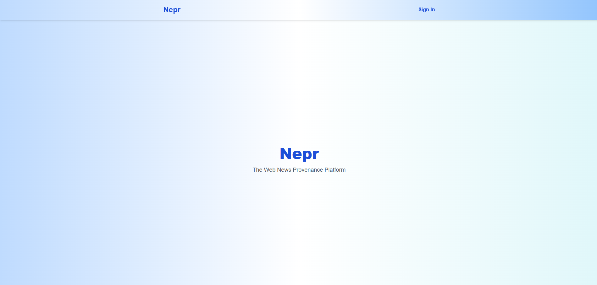 After pressing the sign in button, the user will be redirected to the authentication page. 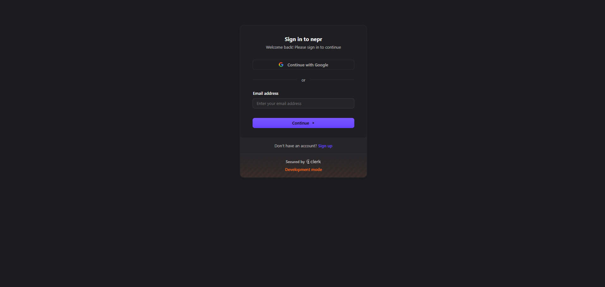 Only after the user signs in successfully, he will be able to navigate through the news.
Navigate trough news
Users can navigate through the news by scrolling down the page or by using the pagination controls at the start and bottom of the page. The pagination controls allow users to move between pages of news articles. Each article is represented by a card containing a possible image, if any present for the article, and the title.

View detailed articles
Users can view detailed information about a specific article by clicking on the article card. This will open a window containing the article's title, description, author, source, and publication date. The modal also provides a link to the full article content. Also on this page the user is able to see the multimedia content of the article. 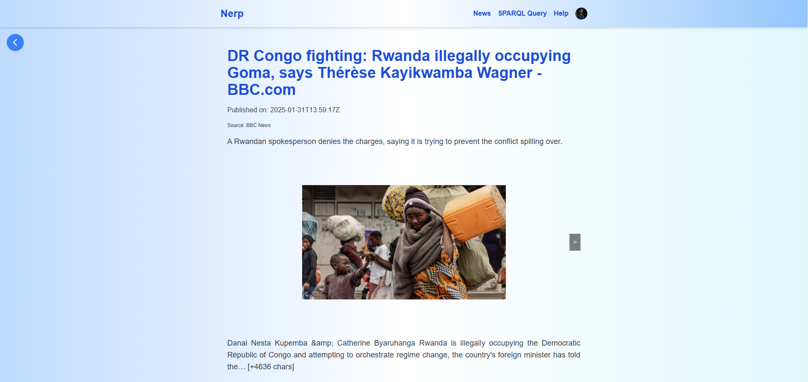 If interested the user has the option to see the article in Turtle format by pressing "Open as Turtle" or as XML by pressing "Open as XML RDF". 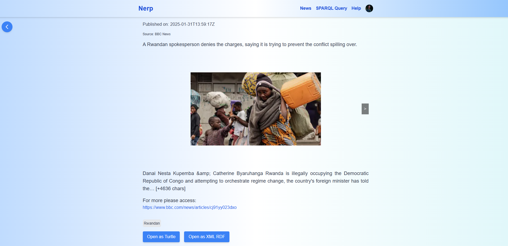
Search for articles by using SPARQL Queries
Users can search for articles by using SPARQL queries. The user can access the SPARQL query page by pressing the "SPARQL Query" button. 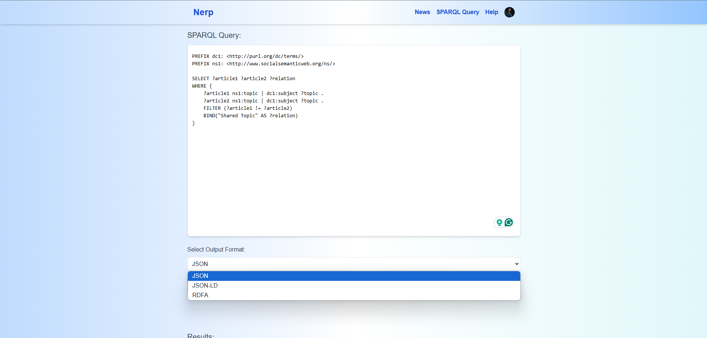 The user can write the query in the text area and press the "Execute Query" button to see the results. 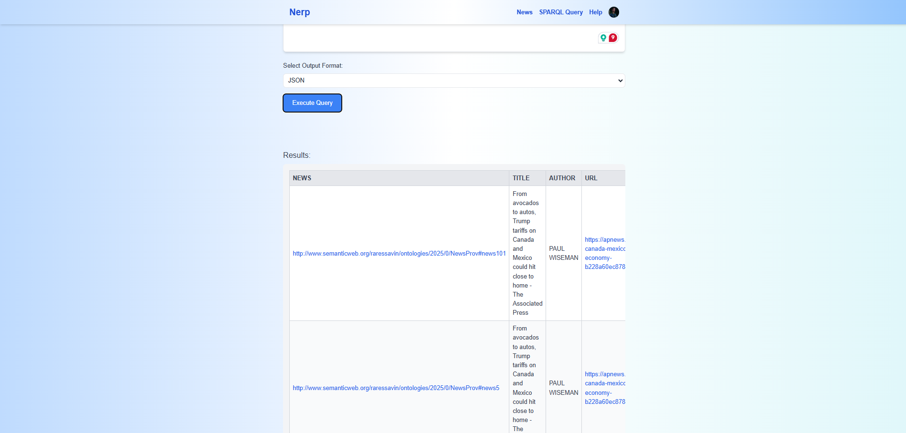 As it can be seen in the provided image the use cand choose in which format to see the results.
- JSON
When the user chooses to visualize the data in JSON format the result will be transformed in a table.
- JSON-LD
When the user chooses to visualize the data in JSON-LD format the result will be presented as a JSON-LD
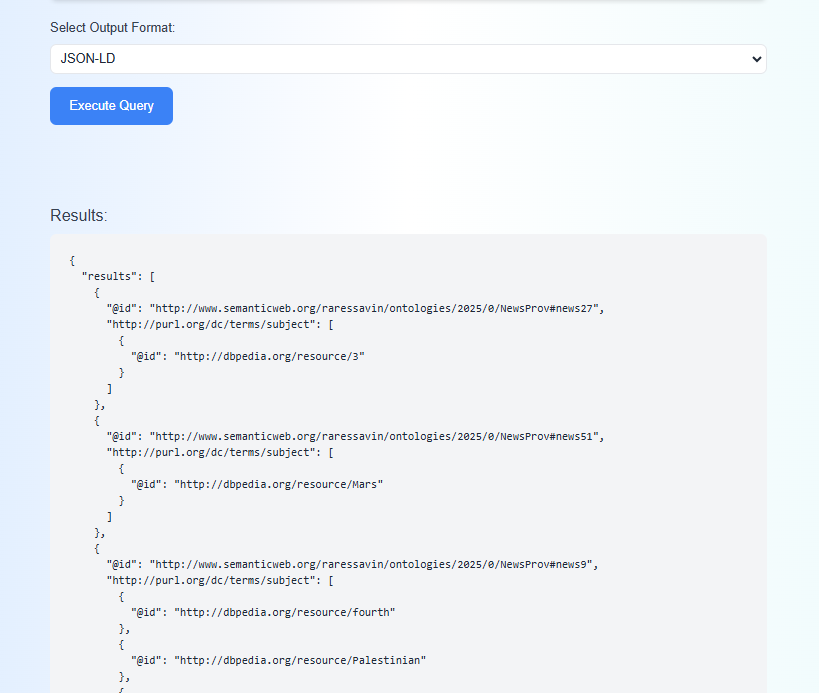 - RDFa
When the user chooses to visualize the data in RDFa format the result will be presented as links to the RDFas
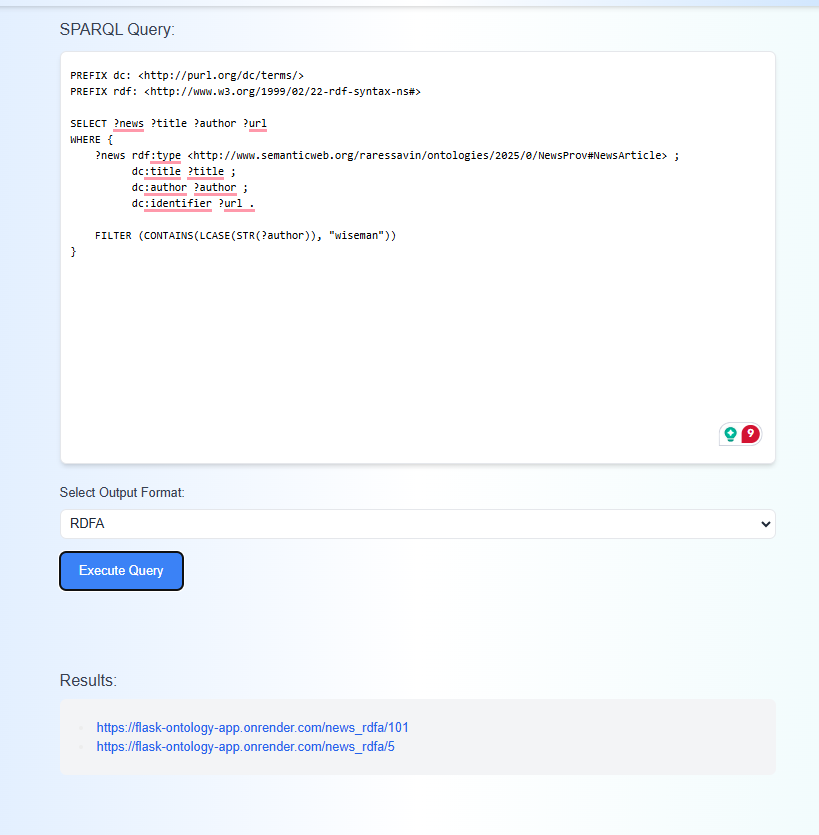
Conclusion
This project demonstrates how semantic web technologies can enhance the management and exploration of news article provenance. By integrating structured metadata models like DCMI, ITPC Standards, and the Social Semantic Web Thesaurus, alongside powerful external knowledge sources such as DBpedia, the platform enriches the context and accuracy of news content. Through the use of RDF and SPARQL, the system not only enables efficient querying and visualization of articles but also fosters deeper interconnections between entities and topics.